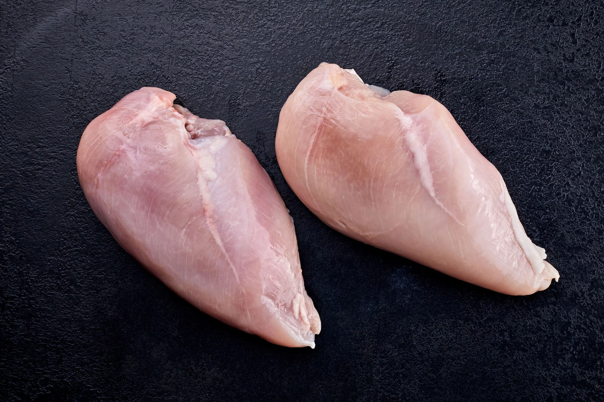
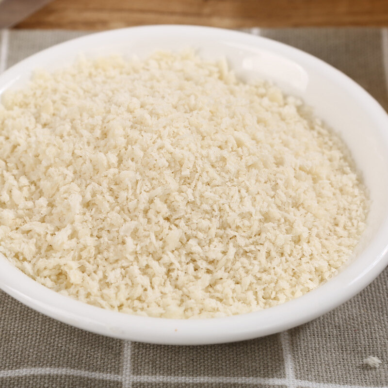
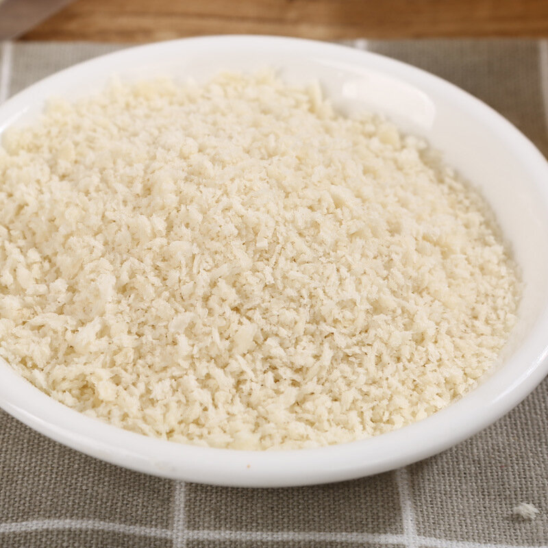
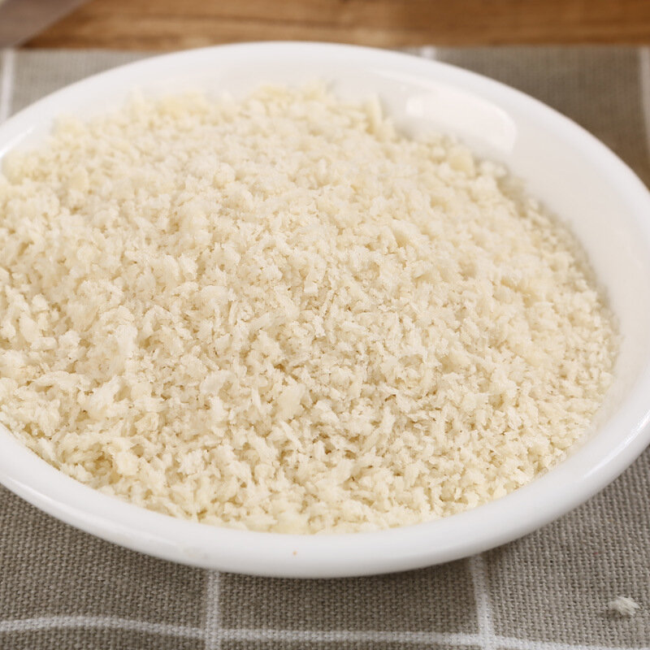
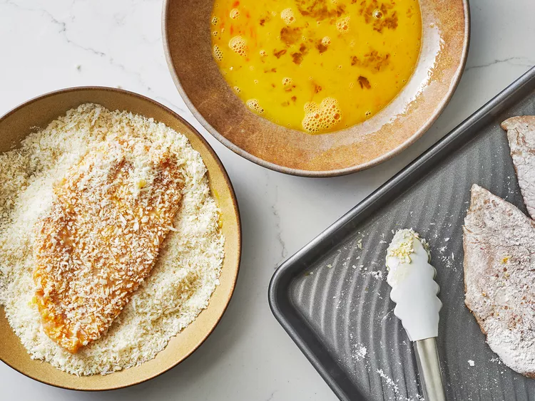
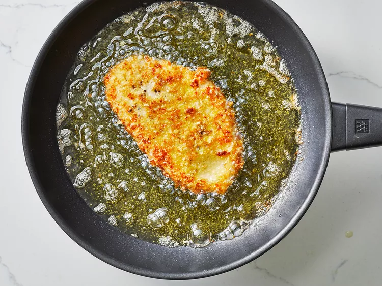
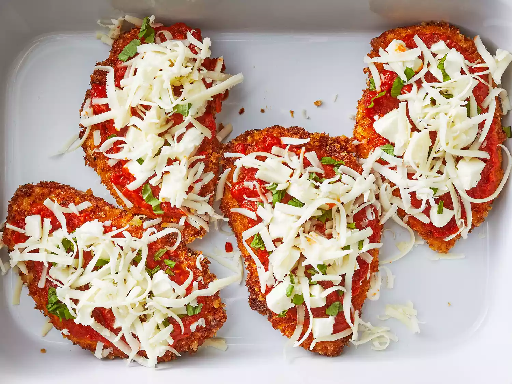

Chicken Parmesan
Chicken Parmesan is no doubt the most popular non-pasta dish in Italian-American style restaurants. And while this delicious meal may seem fancy, it's actually easy to make at home.
Cook Time: 20 minutes
Servings: 4
Ingredients:
- 4 skinless, boneless chicken breast halves
- salt and freshly ground black pepper to taste
- 2 large eggs
- 1 cup panko bread crumbs, or more as needed
- ¾ cup grated Parmesan cheese, divided
- 2 tablespoons all-purpose flour, or more if needed
- ½ cup olive oil for frying, or as needed
- ½ cup prepared tomato sauce
- ¼ cup fresh mozzarella, cut into small cubes
- ¼ cup chopped fresh basil
- ½ cup grated provolone cheese
- 2 teaspoons olive oil

 


Directions:
- Preheat an oven to 450 degrees F (230 degrees C).
- Place chicken breasts between two sheets of heavy plastic (resealable freezer bags work well) on a solid, level surface. Firmly pound chicken with the smooth side of a meat mallet to a thickness of 1/2-inch.
- Season chicken thoroughly with salt and pepper. Using a sifter or strainer; sprinkle flour over chicken breasts, evenly coating both sides
- Beat eggs in a shallow bowl and set aside.
- Mix bread crumbs and 1/2 cup Parmesan cheese in a separate bowl, set aside.
- Dip a flour-coated chicken breast in beaten eggs. Transfer breast to the bread crumb mixture, pressing crumbs into both sides. Repeat for each breast. Let chicken rest for 10 to 15 minutes.
- Heat 1/2 inch olive oil in a large skillet on medium-high heat until it begins to shimmer. Cook chicken in the hot oil until golden, about 2 minutes per side. The chicken will finish cooking in the oven.
- Transfer chicken to a baking dish. Top each breast with 2 tablespoons tomato sauce. Layer each chicken breast with equal amounts of mozzarella cheese, fresh basil, and provolone cheese. Sprinkle remaining Parmesan over top and drizzle each with 1/2 teaspoon olive oil.
- Bake in the preheated oven until cheese is browned and bubbly and chicken breasts are no longer pink in the center, 15 to 20 minutes. An instant-read thermometer inserted into the center should read at least 165 degrees F (74 degrees C).




Chef's Notes
Use high-quality prepared tomato sauce for a better result. You may substitute pesto or dried Italian herbs of your choice for basil or omit entirely.